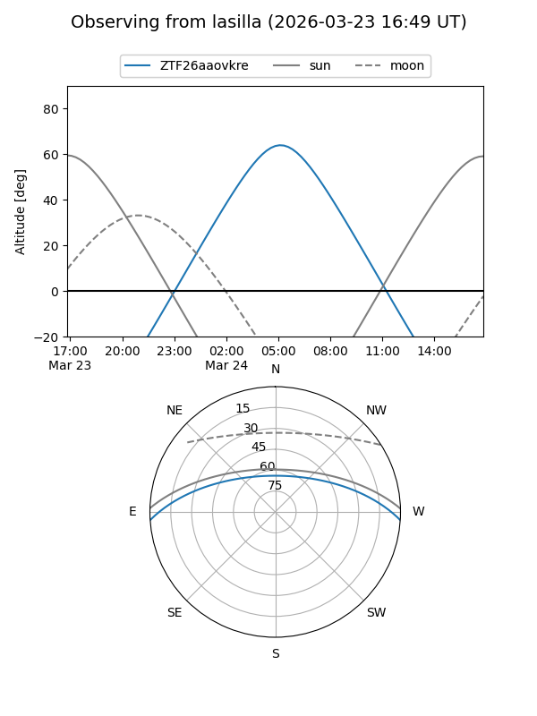
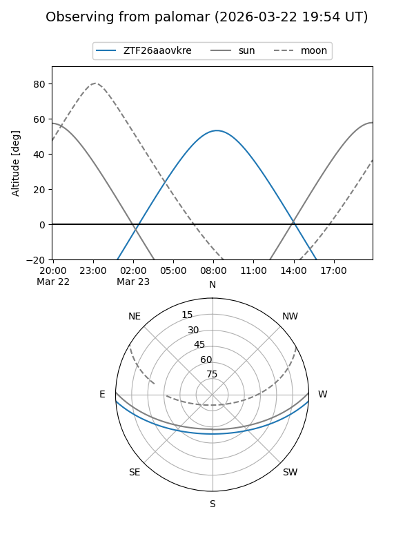

ZTF26aaovkre
Target ZTF26aaovkre at 2026-03-23 09:25
Aliases and brokers:
FINK: link
Lasair: link
ALeRCE: link
alt names
ZTF26aaovkre (ztf,fink_ztf)
Coordinates:
equatorial (ra, dec) = 187.5210,-3.09372
equatorial (HMS+DMS) = 12:30:05.05,-03:05:37.38
galactic (l, b) = (292.4343,+59.34210)
Flags:
Photometry:
last ztfg=17.79
1 ztfg detections
Lightcurve
Visibility


Additional plots